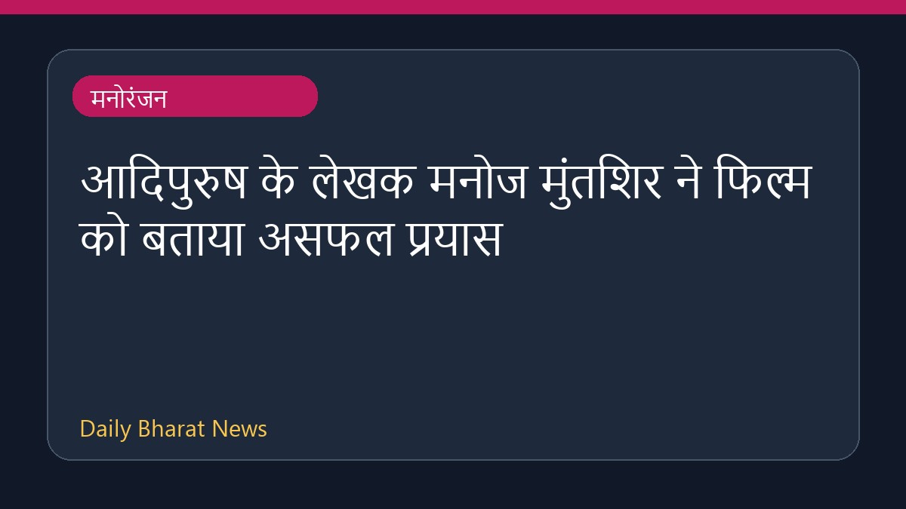

आदिपुरुष के लेखक मनोज मुंतशिर ने फिल्म को बताया असफल प्रयास

फिल्म आदिपुरुष के लेखक मनोज मुंतशिर ने अपनी इस फिल्म को एक असफल प्रयास स्वीकार किया है। उन्होंने जनता से यह अपील की है कि उनके इस प्रयास की तुलना महाकाव्य रामायण या किसी अन्य आगामी परियोजना से न की जाए। मुंतशिर ने यह भी माना कि उनकी फिल्म दर्शकों की उम्मीदों पर खरी नहीं उतर पाई। इस विषय में उन्होंने रावण के किरदार के लिए अभिनेता यश की प्रशंसा की है। उन्होंने कहा कि अपनी असफलता को स्वीकार करने में उन्हें कोई संकोच नहीं है।